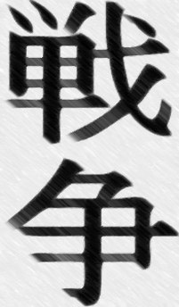

Я работаю в океанариуме экскурсоводом.
Тут у нас крокодилы, идемте дальше.
Каждый день к нам заходят эталонные жители России: женщины за сорок с целлюлитом, вяло прикрытым растянутым выцветшим купальником, мамочки с детьми, которые визжат и носятся по всему помещению, чОткие пацанчики, которые наверное не снимают свои кепки даже когда спят. Так же к нам завозят орды школьников из летних лагерей.
А тут у нас черепахи, идемте дальше.
Я знаю, что людям не интересно, люди знают, что я знаю, что им не интересно. Если они заходят к нам после дегустационного зала, то от них так разит "лучшими коньяками черноморского побережья", что к концу экскурсии я сам немного навеселе. Веселе. Слово то какое. Я натянуто улыбаюсь только когда туристы покидают наш стилизованный под морскую пещеру подвал и желаю им всего доброго. Рассказываю я довольно интересно. Мне было интересно только в первый день. потом самые экзотические твари, которых и по телевизору то редко увидишь, стали лишней парой строчек в потоке моих речей.
А тут у нас скорпион, идемте дальше.
Под конец дня язык заплетается. Я часто оговариваюсь, а голос срывается в рык или высокий писк. При долгой болтовне рот пересыхает и постоянно хочется пить. Плюс еще похмелье.
А тут у нас юный алкоголик, идемте дальше.
Пью я с восьмого класса. Именно тогда от нас ушел отец и приехала мамина мать, моя бабушка.
Здесь у нас старая климаксичка, очень агрессивна, держитесь подальше и следите за детьми, чтобы не совали руки в клетку.
С принятием закона о запрете продажи алкоголя и сигарет пропала возможность покупать пиво в магазине за школой. Тогда, в первые месяцы, с этим было строго и пить было вообще нечего. Благо мой дед — алкоголик с пожизненным стажем и застал сухой закон. Он научил меня делать бражку. Сахар, вода и дрожжи. На чердаке у меня стояло 6 трехлитровых банок с белесой резко пахнущей жидкостью. С виду она похожа на сперму, но не такая густая. После того, как весь сахар переработан дрожжами в спирт, пить эту горькую субстанцию достаточно противно. Но я пил. Я приходил со школы, уставший от истеричных учителей и малообразованных сверстников и пил. Пил достаточно много, литр-полтора десятиградусной жидкости. Тогда то это все и началось.
Тут у нас пьяный школьник-социофоб, пройдемте далее.
По идее на нашем чердаке предусматривалась еще одна комната, но с распадом нашей семьи развалился и маленький бизнес, деньги прекратили идти в нашу семью стабильным потоком и сократились до 15к маминой зарплаты на заводе.
Здесь у нас очередные денежные проблемы, встречаются повсеместно, пройдемте далее.
Чердак так и остался помещением без отопления и теплоизоляции, к балкам я подвесил гамак, а среди коробок с вещами стояла одна неприметная, в которой находились банки с брагой. Я приходил, пил, самоудовлетворялся с помощью правой руки и фантазии и читал. Денег на книги у меня не было и я читал неплохие объемы текста в формате java с экрана кнопочного самсунга s3310. Собственно поэтому сейчас я ношу очки.
А здесь у нас юноша с недельной щетиной и очками, купленными в ларьке "оптика" у вокзала за 250р, пройдемте дальше .
Меня всегда утомляли люди. Люди и шум. Я не знаю почему. При долгом нахождении среди большого кол-ва людей у меня начинает болеть голова, нападает сонливость, апатия и появляется четкое ощущение того, что я на этом празднике жизни явно лишний. Особенно эти гадостные ощущения усугубляются в праздники.
А здесь у нас рак-отшельник, спрятавшийся в свою раковину, идемте дальше.
Ощущения эти настолько поганы, что поскорее хочется чем то их хотя бы смягчить. Алкоголь. Впервые серьезно надрался на народном гулянье в честь то ли девятого мая, то ли чего то еще.
Каждая из полученных линий называется фазовой траекторией. Когда меняется состояние системы, изображающая её точка движется по одной из этих траекторий, стрелки указывают направление движения изображающей точки.

По графику видно, что значения скорости и координаты меняются циклическим образом, то есть периодически повторяются. Отсюда можно сделать вывод, что описываемая рассмотренным уравнением система будет совершать колебания. Бинго! Именно так ведёт себя маятник, и если решить уравнение, решение будет иметь вид периодических функций (а именно — комбинации синуса и косинуса).

Следует однако помнить, что замена синуса его аргументом оправдана лишь для малых углов отклонения (от 10 градусов и меньше), поэтому мы не можем доверять тем траекториям, которые выходят за границы области, ограниченной жирными пунктирными линиями, то есть из четырех приведенных траекторий лишь оранжевая достоверно отображает реальность. Кроме того, поскольку x это угол, то его значения, соответствующие 180 и -180 градусам описывают одно и то же положение стержня, то есть правая и левая пунктирные линии (тонкие) на графике это на самом деле одна и та же линия.

Теперь, поскольку нам понятна суть, можно перейти к чему-то посложнее. Выше мы очень сильно упростили уравнение и при этом ограничили себя только малыми колебаниями. Математик бы сказал, что мы линеаризовали уравнение и пренебрегли нелинейными эффектами. Так давайте включим в рассмотрение нелинейность. Вернёмся к самому первому уравнению — с синусом. Если мы повторим с ним то, что проделали с линейным уравнением, мы получим следующий закон сохранения:
Начальник политуправления сирийской армии генерал Самир Сулейман сообщил, что три дня назад российской авиации удалось нанести удар по складу с оружием боевиков. Это подорвало их боевой дух и возможности по обороне города.
Кроме того, он отметил, что высокоточные удары авиации РФ уничтожили несколько баз и складов "Фронта ан-Нусра" в соседних горах, что и позволило сирийской армии перейти в наступление и выбить боевиков из города Аль-Бахса. Сейчас позиции террористов находятся примерно в 10 километрах от города, армия обстреливает их из артиллерии, так же сирийцы рассчитывают на продолжение помощи со стороны российских самолетов.